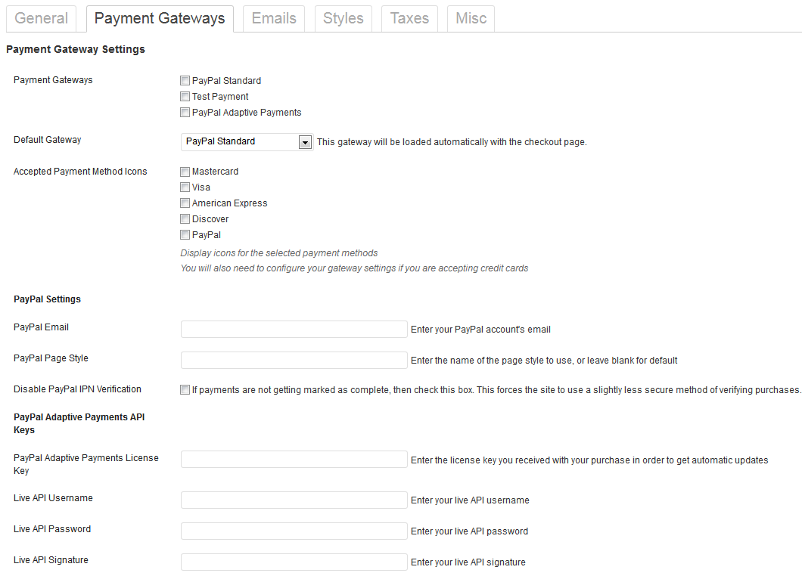

theme shared on weidea.net
Funder - Crowdfunding Responsive Wordpress Theme
Documentation
Funder is Crowdfunding Responsive Wordpress Theme that offers a wide range of features that enables to create a listing of companies to rise funds.
Thank you for purchasing our theme. If you have any questions that are beyond the scope of this help file, please feel free to email via my user page contact form here. Thanks so much!
Installation How to Install the WordPress Template
b) WordPress Upload: Navigate to Appearance > Add New Themes > Upload. Go to browse, and select the zipped theme folder. Click “Install Now” and the theme will be uploaded and installed. Once the theme is uploaded, you need to activate it. Go to Appearance > Themes and activate your chosen theme.
| ZIP plugin | Description |
|---|---|
appthemer-crowdfunding.zip |
Funder required to install Crowdfunding Plugin to make it fully functional site. Download |
easy-digital-downloads.zip |
Funder required to install Easy Digital Downloads Plugin to make it fully functional site. Download |
To import dummy content (categorise/page/menu/blog/companies)
A) dummy/funder.dummy.xml - go to Tools => Import => WordPress, and set Download attachment.

Install Now and Activate Plugin & Run Importer
To setup Homepage Go to Pages > Add New give name of page. e.g Home at right side there will be options to manage Page Attibutes, select Front Page templete from dropdown and publish the page.
Now Go to Settings => Reading => set Reading Settings - Front page displays - A static page - Front page: - Home
To setup Homepage Go to Pages > Add New give name of page. e.g Blog at right side there will be options to manage Page Attibutes, select Blog templete from dropdown and publish the page.
Now Go to Settings => Reading => set Reading Settings - Front page displays - A static page - Front page: - Home
Here are required shortcodes to publish functional pages. Example: If you are setting up the “Start Campaign Page” you would first go to Pages > Add New give the page a title and paste the [wpg_crowdfunding_submit] shortcode onto the page and Publish the page, do the same for the rest of the shortcodes above.
| Title | Template |
|---|---|
| Start Campaign Page | [wpg_crowdfunding_submit] |
| Campaign Contributor Dashboard | [appthemer_crowdfunding_profile] |
| Login | [appthemer_crowdfunding_login] |
| Register | [appthemer_crowdfunding_register] |
| Receipt Page | [edd_receipt] |
| Checkout Page | [download_checkout] |
Campaigns How to add and manage compaigns
To create a campaign as the site admin go to Campaigns > Add New, give your campaign a title, upload a featured image, add a video if you have one to the “Campaign Video” section, add the description to the campaign, select a Category for the campaign.
Next go to the section called “Campaign Configuration” and add the goal amount, location of the campaign, the author of the campaign name, there PayPal address, the end date of the campaign.
Under where it says “Reward Options” this is where you can add pledge levels and rewards, click the tick box for “Enable multiple reward options” and fill out the Option Name, Price for each reward.
IMPORTANT:
Always enable the button that says “Disable the automatic output of the purchase button”.
All-or-Nothing & Flexible Funding Options
If you have a pre-approval billing gateway installed such as WePay, Stripe or PayPal Adaptive Payments you will see these two types of campaign options: All-or-Nothing and Flexible.
- All-or-Nothing: The default option, campaigns can only collect funds if the goal amount has been reached before the end date.
- Flexible: Campaigns can collect funds even if the goal has not been met. It is possible to charge a higher fee with this type.
Flexible Campaign Fees
When using the PayPal Adaptive Payments gateway to keep a higher percentage of each pledge on flexible campaigns, simply visit Campaigns > Settings > Payment Gateways, and enter an additional percentage amount in the Adaptive Payments settings.
Go to Campaigns > All Campaigns then go to the campaign that has eneded, and you will see a box called Campaign Funds as shown below. When a campaign ends click on Collect Funds (Note: If using the PayPal Adaptive Payments gateway ensure that the campaign authors PayPal address is correct before collecting the funds.)
It is also possible when using the [appthemer_crowdfunding_profile] shortcode to allow users to request a payout once a campaign is complete. This will send a notification email to the site administrator. You can then review the campaign and collect funds.
When setting up your site please make sure you have the settings setup the same as the following instructions.
Go to Campaigns > Settings > General.
Please ensure that you setup all of the required pages for your site. You will need to ensure that you have set the checkout page, a success page with the shortcode of [edd_receipt] added to the page and you have setup an FAQ page and setup the submit a campaign page with the shortcode of [wpg_crowdfunding_submit] added to the page.
Go to Campaigns > Settings > Misc.
Please ensure that you have “Redirect to checkout” enabled so that when people click on the different pledge levels they will be redirected to the checkout page automatically.
Plugin offers flexible payment options, which can be access from Campaign > Settings > Payment Gateways
Go to Campaigns > Reports > Export. In the “Export Campaign Data” box, select the campaign to export. A .CSV download will begin shortly.
It is also possible when using the [appthemer_crowdfunding_profile] shortcode to allow users to export their data. They will be presented with a link once the campaign is completed.
Theme Options How to configure Theme options
Funder offers a flexible Homepage options, easy drag drop let you easily manage different elements.
Funder allows user to upload custom image logo or select text logo.
Add own welcome message to slider
Funder offers you a flexible about section. You can add own title and discription
Funder offer flexible setting to control display of projects.
Funder has its bulit-in contact from with flexible options. Section has two flexible columns under contact form, it has HTML code support
Funder has option to upload client logos and option to link them.
Styles Styles customization and highlights
CSS Structure
style.css - main styles of the template including responsive styles
bootstrap.css - styles from twitter bootstrap.
colorbox.css - style for light box
selectbox.css and jquery-ui.css – styles specific to jQuery
resp.css – responsive styles
JavaScript JavaScript customization and highlights
JavaScript Files
funder.js – main custom scripts for the template
jquery.colorbox.js - A lightweight customizable lightbox plugin for jQuery
jquery.easing.js - Add easing effects to different elements
jquery.magnific-popup.min.js - Popup Light box
jquery.nav.js - Add sticky menu
jquery.isotope.min.js - an exquisite jQuery plugin for magical layouts. More information can be found at http://isotope.metafizzy.co/
jquery.mobilemenu.min.js - responsive scripts create menu on mobile devices
jquery.placeholder.min.js - support library from Internet Explrer fix
jquery.selectbox-0.6.1.js - support library from customization select element
Bootstrap.js - support to different twitter bootstrap jquery elements
jquery-uii.js - jQuery UI elements